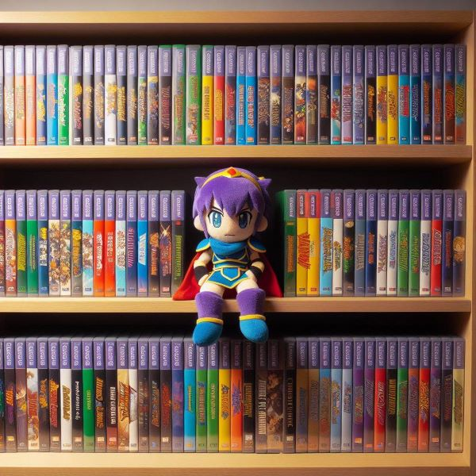

The Fire Emblem franchise is a long-running series of tactical role-playing games (RPGs) developed by Intelligent Systems and published by Nintendo. The series debuted in 1990 with the release of "Fire Emblem: Ankoku Ryū to Hikari no Tsurugi" ("Shadow Dragon and the Blade of Light") for the Nintendo Entertainment System (NES) in Japan.
Popularity
Fire Emblem has a passionate and dedicated fanbase that celebrates the series through fan art, fanfiction, discussion forums, and fan-run events. The sense of community and camaraderie among fans contributes to the series' enduring popularity.
Intelligent Systems continually introduces new gameplay mechanics, features, and storytelling techniques with each installment, keeping the series fresh and appealing to both longtime fans and newcomers alike.
Overall, the combination of engaging storytelling, strategic gameplay, memorable characters, and a supportive community has contributed to Fire Emblem's enduring popularity and status as one of Nintendo's flagship franchises. Below are some of the most popualr games in the series. This table can also be found on the popular games & characters page.
Most Popular Games
Game
Year
Console
Fire Emblem: Awakening
2012
Nintendo 3DS
Fire Emblem: Three Houses
2019
Nintendo Switch
Fire Emblem: Fates
2015
Nintendo 3DS
Fire Emblem: Blazing Blade
2003
Game Boy Advance
Fire Emblem: Path of Radiance
2005
GameCube
Fire Emblem: Shadows of Valentia
2017
Nintendo 3DS
About the Franchise
The Fire Emblem franchise has its origins in the mid-1980s when Nintendo was seeking to expand its portfolio of video games. At the time, Nintendo's strategy was to create games that could be bundled with the Family Computer (Famicom), the Japanese version of the Nintendo Entertainment System (NES), to boost sales of the console.
Intelligent Systems, a Japanese video game development studio founded in 1986, was tasked with creating a new game that would appeal to the Famicom's target audience. Led by Toru Narihiro, Intelligent Systems began development on a tactical role-playing game (RPG) with a medieval fantasy setting, inspired by tabletop RPGs and classic fantasy literature.
The result of their efforts was "Fire Emblem: Ankoku Ryū to Hikari no Tsurugi" ("Shadow Dragon and the Blade of Light"), released in 1990 for the Famicom in Japan. The game was a critical and commercial success, introducing players to the tactical RPG gameplay mechanics and strategic depth that would become hallmarks of the Fire Emblem series.
"Fire Emblem: Ankoku Ryū to Hikari no Tsurugi" followed the story of Prince Marth of Altea as he embarked on a quest to reclaim his homeland from the evil sorcerer Gharnef and the dark dragon Medeus. The game featured grid-based battles, permanent death for characters, and a diverse cast of characters with unique classes and abilities.
Due to the success of the first game, Intelligent Systems produced several sequels and spin-offs, solidifying Fire Emblem as one of Nintendo's flagship franchises. The series continued to evolve with each new installment, introducing new gameplay mechanics, expanding the lore and world-building, and captivating players with its engaging storytelling and memorable characters.

AI generated image using Bing
About the Creators
The Fire Emblem franchise was created by the Japanese video game development studio Intelligent Systems, which is a subsidiary of Nintendo.
Intelligent Systems was founded in 1986 by Toru Narihiro, who served as the company's first president. Narihiro played a key role in the development of the Fire Emblem series, particularly in its early years. He served as a producer and supervisor for many of the franchise's early titles, helping to shape the series' gameplay mechanics, storytelling, and overall direction.
Another notable figure in the creation of the Fire Emblem series is Shouzou Kaga. Kaga was the director and scenario writer for the first five Fire Emblem games, including "Fire Emblem: Ankoku Ryū to Hikari no Tsurugi" (Shadow Dragon and the Blade of Light), the inaugural title in the series. Kaga played a significant role in establishing the series' core gameplay mechanics, world-building, and narrative style.
While Kaga left Intelligent Systems in the late 1990s to form his own studio and work on new projects, his influence on the Fire Emblem series is still felt today, and he remains a respected figure among fans of the franchise.
Over the years, many talented developers and designers have contributed to the Fire Emblem series, each leaving their mark on the franchise through their creative vision and dedication to delivering high-quality gaming experiences.
Intelligent Systems continues to develop and expand the Fire Emblem series, with new installments, spin-offs, and remakes released periodically to the delight of fans around the world.
The lore of the Fire Emblem series is quite extensive and spans multiple games, each adding layers of depth to the fictional universe. Here are some key aspects of the lore that contribute to the rich tapestry of the Fire Emblem world:
Continuity and Connected Universes: While each Fire Emblem game typically features its own standalone story and characters, many games are set within a shared universe known as the "Fire Emblem universe." Some games are direct sequels or prequels to others, and certain characters, locations, and events are referenced across multiple titles. This interconnectedness helps to build a cohesive lore that fans can explore and analyze.
Fantasy Setting: The Fire Emblem series is set in a medieval fantasy world populated by humans, dragons, and various mythical creatures. The world is often divided into multiple kingdoms, empires, and factions, each with its own unique culture, history, and conflicts.
Legendary Weapons and Artifacts: Throughout the series, legendary weapons and artifacts play a significant role in the lore. These powerful weapons are often imbued with magical properties and are wielded by legendary heroes or important figures in the game's history. Examples include weapons like Falchion, Ragnell, and the Binding Blade.
Divine Dragons and Dragonsbane: Dragons are a central element of Fire Emblem lore, often depicted as powerful beings with the ability to shape the world. The lore frequently explores the relationship between humans and dragons, with conflicts arising over the control of dragon-related artifacts and the balance of power between the two races.
Mythology and Religion: Many Fire Emblem games incorporate elements of mythology and religion into their lore, including the worship of gods and goddesses, the presence of divine beings, and the existence of prophetic legends and prophecies.
Political Intrigue and Warfare: The Fire Emblem series often explores themes of political intrigue, warfare, and power struggles between nations and factions. Players navigate complex political landscapes, forge alliances, and engage in battles to determine the fate of kingdoms and empires.
Support Conversations and Character Backstories: A unique aspect of Fire Emblem lore is the inclusion of support conversations, which allow players to deepen their understanding of characters' personalities, motivations, and relationships. These conversations often reveal insights into the lore and backstory of the game world.